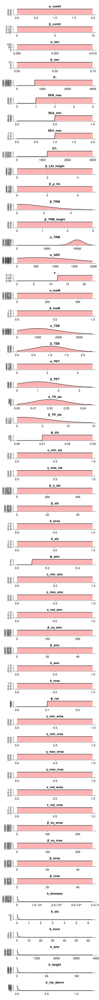

Priors
using PrettyTables
using CairoMakie
using Statistics
using Distributions
import GrasslandTraitSim as sim
inference_obj = sim.calibrated_parameter(; )
p_keys = collect(keys(inference_obj.priordists))
p_priors = collect(inference_obj.priordists)
p_priors_str = replace.(string.(p_priors), "\n" => "", "{Float64}" => "",
"Distributions." => "")
m = hcat(p_keys, p_priors_str, inference_obj.prior_text)
pretty_table(m; header = ["Parameter", "Prior Distribution", "Justification"],
alignment = [:r, :l, :l], crop = :none, columns_width = [0, 40, 70], autowrap = true)┌──────────────┬──────────────────────────────────────────┬────────────────────────────────────────────────────────────────────────┐
│ Parameter │ Prior Distribution │ Justification │
├──────────────┼──────────────────────────────────────────┼────────────────────────────────────────────────────────────────────────┤
│ α_com_height │ Truncated(Normal(μ=0.5, σ=0.2); │ The community height reduction should only apply to plant communities │
│ │ lower=0.0, upper=2.0) │ with a low community weighted mean plant height │
│ α_sen │ Uniform(a=0.0, b=0.01) │ TODO │
│ β_sen │ Truncated(Beta(α=2.0, β=1.0); lower=0.3) │ a value of 1 means that the leaf life span is equal to the senescence │
│ │ │ rate, lower values account for for a lower senescence rate for the │
│ │ │ stem and root biomass │
│ Ψ₁ │ Uniform(a=700.0, b=3000.0) │ Jouven (2006) used 775 for this parameter; this parameter should be │
│ │ │ lower than Ψ₂ which is 3000 because otherwise the senescence rate │
│ │ │ would be decreased in autumn │
│ SEN_max │ Truncated(Normal(μ=2.0, σ=2.0); │ Jouven (2006) used the value three for this parameter, this means │
│ │ lower=1.0, upper=4.0) │ that the senescence rate can be three time higher under certain │
│ │ │ conditions; we decided to use a prior from one to four, this means │
│ │ │ that the senescence rate is not increased in autumn (1) to it is │
│ │ │ strongly increased (4) │
│ SEA_min │ Uniform(a=0.5, b=1.0) │ text │
│ SEA_max │ Uniform(a=1.0, b=2.0) │ text │
│ ST₂ │ Uniform(a=1200.0, b=3000.0) │ text │
│ β_height │ Uniform(a=0.0, b=5.0) │ text │
│ β_PAL_lnc │ Uniform(a=0.0, b=5.0) │ text │
│ β_TRM │ Truncated(Normal(μ=0.0, σ=2.0); │ text │
│ │ lower=0.0) │ │
│ β_TRM_H │ Uniform(a=0.0, b=3.0) │ text │
│ α_TRM │ Truncated(Normal(μ=10000.0, σ=1000.0); │ text │
│ │ lower=0.0) │ │
│ η_GRZ │ Truncated(Normal(μ=10.0, σ=2.0); │ text │
│ │ lower=0.0, upper=40.0) │ │
│ κ │ Truncated(Normal(μ=20.0, σ=2.0); │ text │
│ │ lower=12.5, upper=22.5) │ │
│ α_lowB │ Uniform(a=0.0, b=500.0) │ text │
│ β_lowB │ Uniform(a=0.0, b=1.0) │ text │
│ α_TSB │ Truncated(Normal(μ=1000.0, σ=1000.0); │ text │
│ │ lower=0.0) │ │
│ β_TSB │ Truncated(Normal(μ=1.0, σ=0.5); │ text │
│ │ lower=0.0) │ │
│ α_TR_sla │ Truncated(Normal(μ=0.02, σ=0.01); │ text │
│ │ lower=0.0) │ │
│ β_TR_sla │ Truncated(Normal(μ=1.0, σ=5.0); │ text │
│ │ lower=0.0) │ │
│ ϕ_sla │ Uniform(a=0.01, b=0.03) │ text │
│ η_min_sla │ Uniform(a=-1.0, b=1.0) │ text │
│ η_max_sla │ Uniform(a=-1.0, b=1.0) │ text │
│ β_η_sla │ Uniform(a=0.0, b=500.0) │ text │
│ β_sla │ Uniform(a=0.0, b=50.0) │ text │
│ δ_wrsa │ Uniform(a=0.0, b=1.0) │ text │
│ δ_sla │ Uniform(a=0.0, b=1.0) │ text │
│ ϕ_amc │ Beta(α=3.0, β=10.0) │ text │
│ η_min_amc │ Uniform(a=-1.0, b=1.0) │ text │
│ η_max_amc │ Uniform(a=-1.0, b=1.0) │ text │
│ κ_maxred_amc │ Uniform(a=0.0, b=1.0) │ text │
│ β_η_amc │ Uniform(a=0.0, b=250.0) │ text │
│ β_amc │ Uniform(a=0.0, b=50.0) │ text │
│ δ_amc │ Uniform(a=0.0, b=1.0) │ text │
│ δ_nrsa │ Uniform(a=0.0, b=1.0) │ text │
│ ϕ_rsa │ Uniform(a=0.1, b=0.25) │ text │
│ η_min_wrsa │ Uniform(a=-1.0, b=1.0) │ text │
│ η_min_nrsa │ Uniform(a=-1.0, b=1.0) │ text │
│ η_max_wrsa │ Uniform(a=-1.0, b=1.0) │ text │
│ η_max_nrsa │ Uniform(a=-1.0, b=1.0) │ text │
│ β_η_wrsa │ Uniform(a=0.0, b=250.0) │ text │
│ β_η_nrsa │ Uniform(a=0.0, b=250.0) │ text │
│ β_wrsa │ Uniform(a=0.0, b=50.0) │ text │
│ β_nrsa │ Uniform(a=0.0, b=50.0) │ text │
│ b_biomass │ Truncated(Cauchy(μ=0.0, σ=300.0); │ text │
│ │ lower=0.0) │ │
│ b_sla │ Truncated(Cauchy(μ=0.0, σ=0.05); │ text │
│ │ lower=0.0) │ │
│ b_lnc │ Truncated(Cauchy(μ=0.0, σ=0.5); │ text │
│ │ lower=0.0) │ │
│ b_amc │ Truncated(Cauchy(μ=0.0, σ=30.0); │ text │
│ │ lower=0.0) │ │
│ b_abp │ Truncated(Cauchy(μ=0.0, σ=30.0); │ text │
│ │ lower=0.0) │ │
│ b_height │ Truncated(Cauchy(μ=0.0, σ=1.0); │ text │
│ │ lower=0.0) │ │
│ b_srsa │ Truncated(Cauchy(μ=0.0, σ=0.01); │ text │
│ │ lower=0.0) │ │
└──────────────┴──────────────────────────────────────────┴────────────────────────────────────────────────────────────────────────┘Show the log density of the priors
begin
fig = Figure(; size = (600, 8000))
for (i,p) in enumerate(keys(inference_obj.priordists))
d = inference_obj.priordists[p]
ma = quantile(d, 0.9999)
x = collect(LinRange(0.0, ma, 300))
y = logpdf.(d, x)
f = isinf.(y)
y[f] .= NaN
x[f] .= NaN
Axis(fig[i, 1]; title = String(p), yticklabelsvisible = false)
lines!(x, y; color = :steelblue4, linewidth = 3)
Axis(fig[i, 2]; yticklabelsvisible = false)
lines!(x, pdf.(d, x); color = :steelblue4, linewidth = 3)
end
fig
end